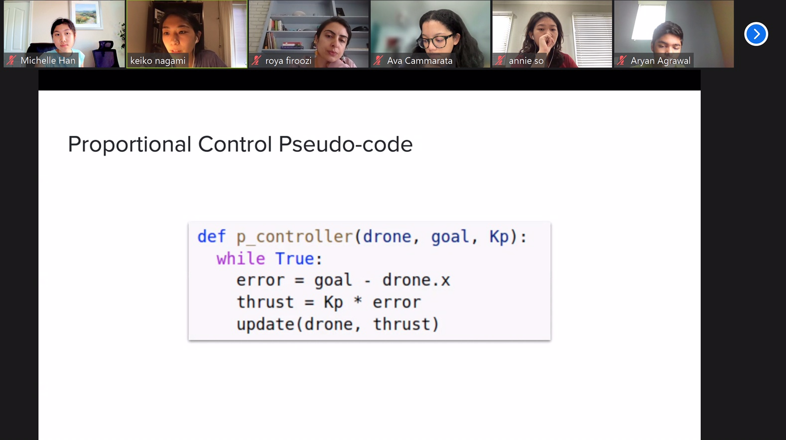
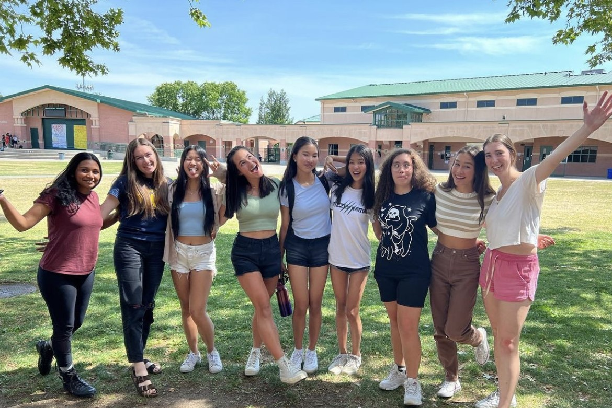
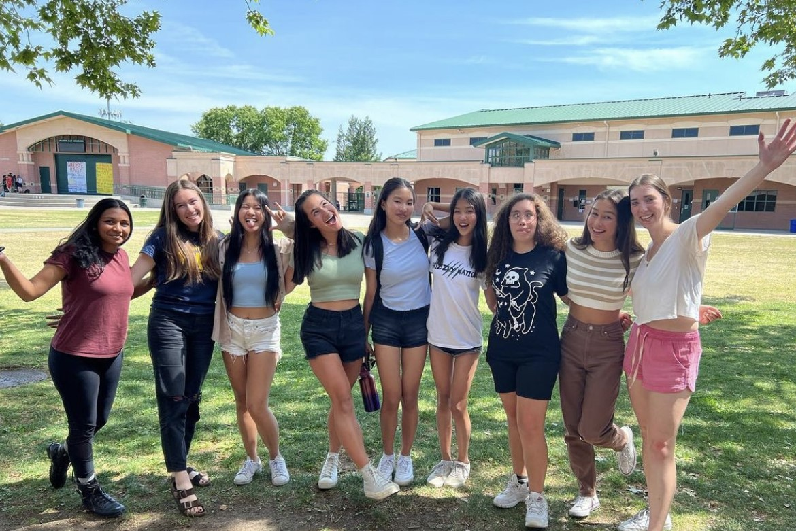

I've been interested in math ever since I was put in a Math Olympiad program when I was young! I really enjoy the creativity and problem-solving skills needed to solve competition math problems, and how different they are from the everyday, straightfoward school math questions.
I've recently picked up coding (HTML & CSS, Python) from a couple of summer camps I attended, but I've fallen in love with it! For HTML & CSS, I love how I'm able to express my creativity and artistic taste through the web (especially because I'm very bad at art by hand). For Python, I learned the basics when I was young, but I recently learned how to apply it to robotics and simulations during the Stanford AI4ALL camp I attended. I'm fascinated by the way Python is able to program robots to move, learn, and interact!
4th one from left in both images above!
 

I'm extremely passionate about supporting female & non-binary students in STEM fields! As a female in STEM, I've seen how seen how in STEM related events, there has always been a disproportionate amount of females participating compared to males, which can be really discouraging especially for younger students. I was especially affected by it when I was younger (as you can see, barely any girls in pictures above), so I’m really passionate about minimizing the gender gap so that younger girls & non-binary students never feel discouraged or out of place. Specifically, I'm part of INTEGIRLS and Superposition, both of which creates opporuntities for minorities in STEM.
I enjoy playing tennis (5 years), playing piano (8 years), debate (public forum), and designing websites!
In addition, I love researching about AI, including: intersection of AI and society, algorithmic fairness and bias, and reinforcement learning!
In my free free time, I like listening to kpop, watching movie recaps (because I don't have the patience to watch a full movie :P),
researching skincare ingredients, and reading webcomics :)